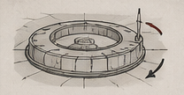
Поворот штыка на 360°
Позволяет выбирать угол атаки без поворота корпуса.
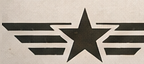
Танк штыковой
Не стреляет.
Не пугает.
А просто колет.
ТШ-1 — первый в мире танк ближнего штыкового боя.
Разработан для прорыва обороны противника,
уличных боёв и воспитания дисциплины.
Вооружён стальным штыком на конце орудия.
Боекомплекта не требует.
Девиз: «Ближе подъедешь — крепче будет!»
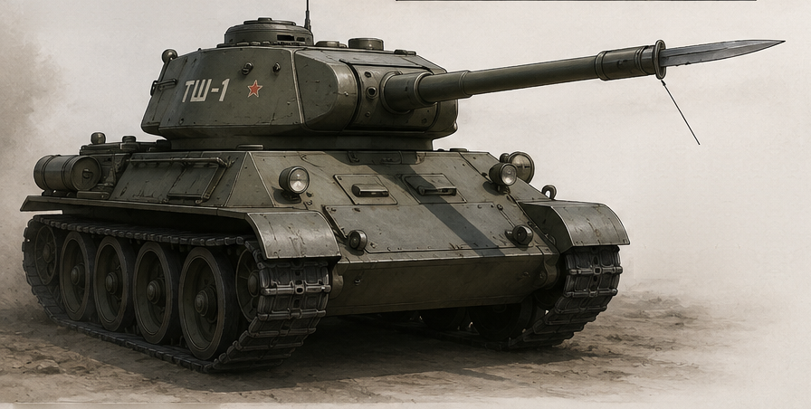
Назначение: проникновение
во вражеские намерения

Позволяет выбирать угол атаки без поворота корпуса.
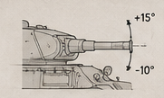
По вертикали: от −10° до +15°. Идеально для всех типов рельефа и целей.
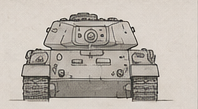
Чтобы подъезжать поближе.
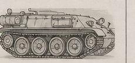
Чтобы быстро сократить дистанцию до цели.
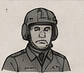
Выбирает цель
и вариант удара.
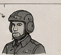
Подъезжает ближе
и уезжает вовремя.
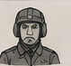
Выбирает угол
и глубину проникновения.
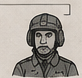
Затачивает экипаж
и мораль.
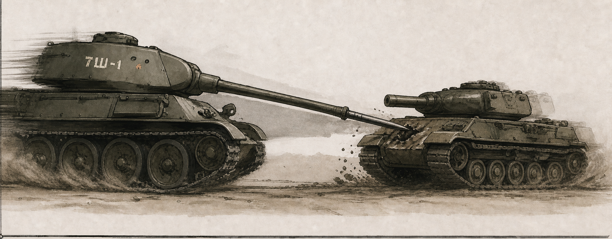
Нож входит в лобовую броню, а танк продолжает ехать. Аргумент подаётся без дистанции.
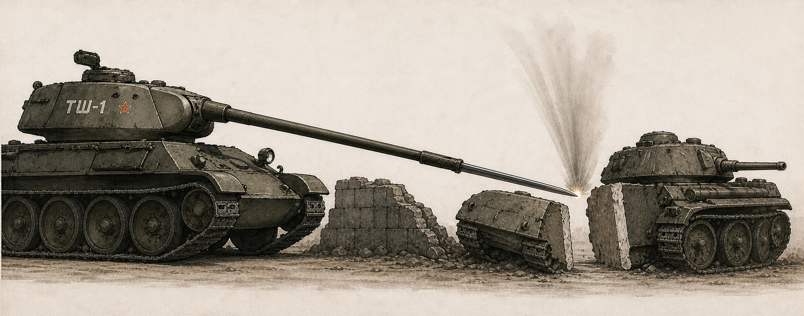
Ствол опускается сверху по дуге. Всё, что оказалось в середине, становится двумя крайностями.
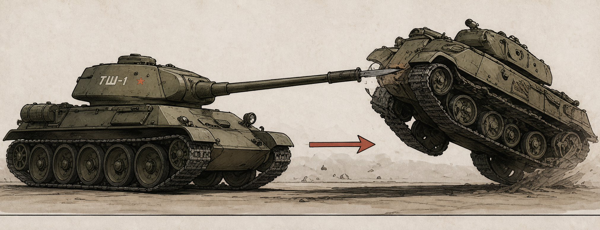
Удар снизу с поддеванием. Эффективен против лёгкой техники и самоуверенных оппонентов.
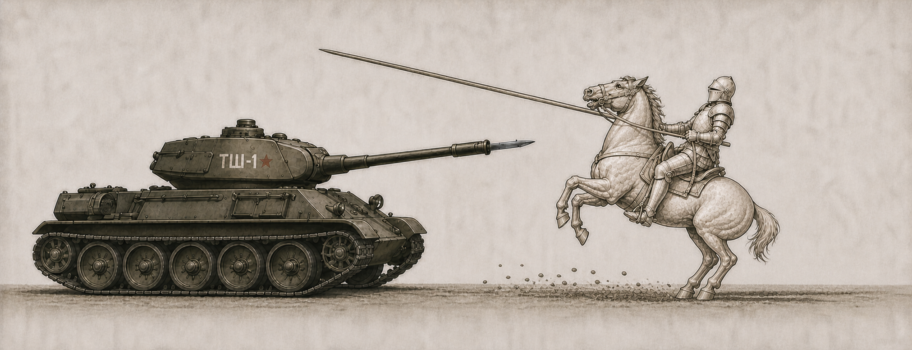
Штык приподнимается на 12°. Кавалерия самостоятельно прекращает атаку.
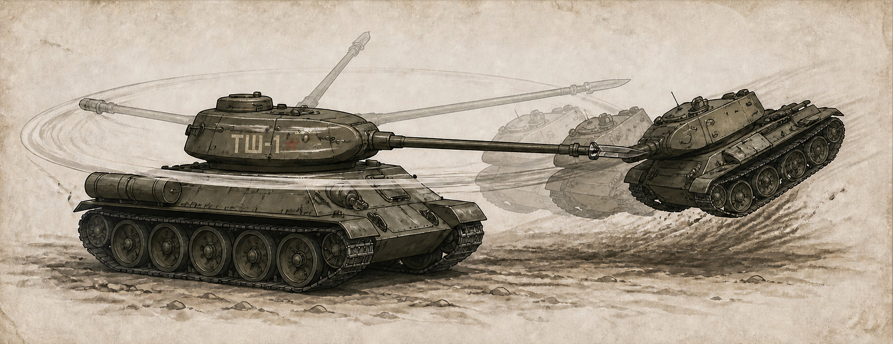
Башня делает полный оборот. Всё в радиусе штыка автоматически становится партнёром.
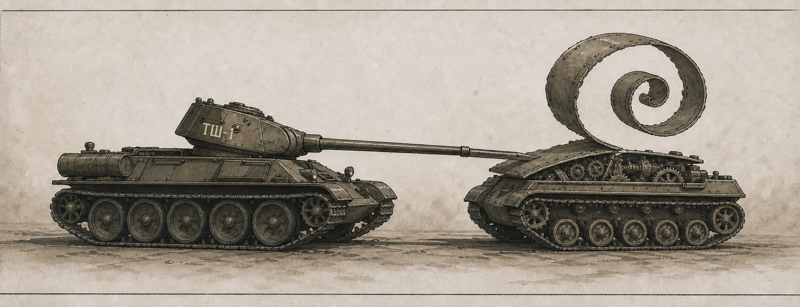
Штык цепляет край брони, башня доворачивается — и содержимое готово к техосмотру.

Башня выходит на обороты, машина набирает высоту и прекращает полёт строго массой.

Полевой режим. Недостаток конструкции: равномерная прожарка доступна только снизу.
Дополнение к наставлению · рабочий фонд
50 неутверждённых способов применить один нож и ни разу не воспользоваться кнопкой огня. Нажатие на рисунок открывает полноразмерный мастер.